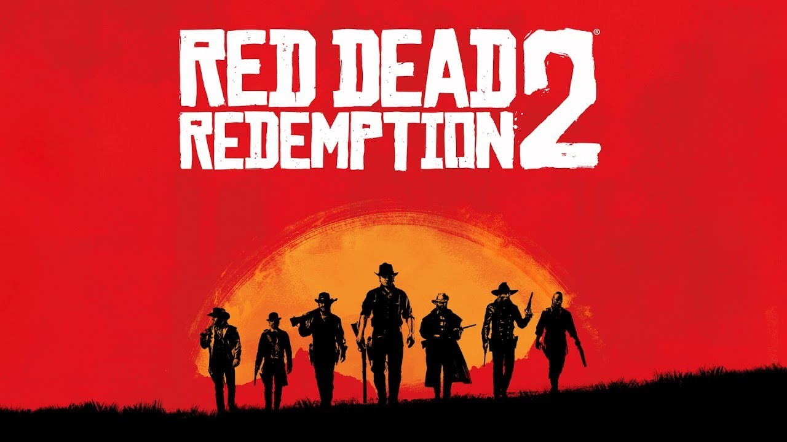

3.Sekiro

hardest game i ever played i love the combact of this game its just so satisfying to do a combo attack truly one of the best feeling
What Makes This Game Good-:
- Unique Combat System: The game features a distinctive combat system centered around posture and parrying, which sets it apart from other action games. The emphasis on timing and precision adds depth and excitement to battles.
- Beautiful World Design: The game is set in a meticulously crafted world inspired by late 1500s Sengoku period Japan. The level design is intricate and interconnected, encouraging exploration and rewarding players with hidden secrets and shortcuts.
- Challenging Difficulty: Sekiro is known for its challenging difficulty. This provides a sense of accomplishment and satisfaction when players overcome tough enemies and bosses.
here's my gameplay of Sekiro Defeating one of the bosses
2.Elden Ring

The name is enough. This game is like pinnicle of gaming everyone has this in their top 3 list.
What Makes This Game Good-:
- Expansive Open World: The game features a vast, interconnected world filled with diverse landscapes, intricate dungeons, and numerous secrets to uncover. The open-world design allows for exploration and discovery, giving players a sense of freedom and adventure.
- Rich Lore and Storytelling:The game features deep lore and a captivating narrative co-written by Hidetaka Miyazaki and George R.R. Martin. The story is delivered through environmental storytelling, item descriptions, and character interactions, encouraging players to piece together the world's history.
- Memorable Boss Fights: The game features numerous memorable boss encounters, each with unique designs, mechanics, and challenges. These battles are often the highlight of the game, providing epic and rewarding experiences
here's the trailer of the Elden Ring Game
1.Red Dead Redemption 2
This is one of the longest game i ever completed,the main character of this game makes such a good emotional connection with the player that player cry as soon as he reaches the end of the game
What Makes This Game Good-:
- Character Development: The characters in the game are well-developed and multi-dimensional. Arthur Morgan's character arc, in particular, is praised for its depth and nuance, making him one of the most memorable protagonists in gaming.
- Stunning Visuals: The game boasts exceptional graphics, with realistic lighting, weather effects, and highly detailed character models. The visual fidelity enhances the overall experience and contributes to the game's immersive quality.
- Realistic Mechanics: The game includes realistic mechanics such as horse riding, weapon maintenance, and survival elements like eating and sleeping. These mechanics add to the authenticity and immersion of the game world.